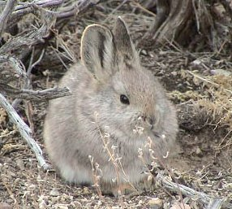

Králík západoamerický (Brachylagus idahoensis) se vyskytuje v oblasti Velké pánve na severozápadě USA. Malá izolovaná populace žije také v povodí řeky Columbia. Je to vůbec nejmenší druh králíka. Měří 22 až 28 cm a váží 350 až 450 gramů. Díky tomu se mu v angličtině říká Pygmy rabbit.
Králík západoamerický si vyhrabává složitý systém nor. Aktivní je převážně při východu a západu slunce. Jeho hlavní potravou je pelyněk Artemisia tridentata. Pohlavní dospělosti dosahuje v jednom roce, samice vrhne až třikrát do roka. Dožívá se tří až pěti let. Králíky západoamerické loví lasice dlouhoocasá a kojot prérijní.
